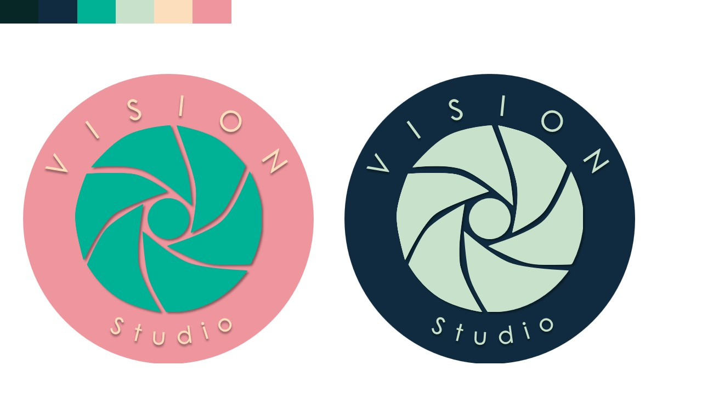

Proyecto escolar: Imagen de una Empresa
Planeación y diseño de la imagen de un estudio fotográfico Fictíceo.
Isologo final de la empresa
Para esta empresa diseñé el isologo y los mock-ups con las herramientas de InkScape para los
elementos vectoriales, Medibang Paint Pro para los fondos de pantalla y detalles finales de los diseños,
Power Point para la presentación final con todo el contenido, y Canvas para algunos de los Mock-ups.